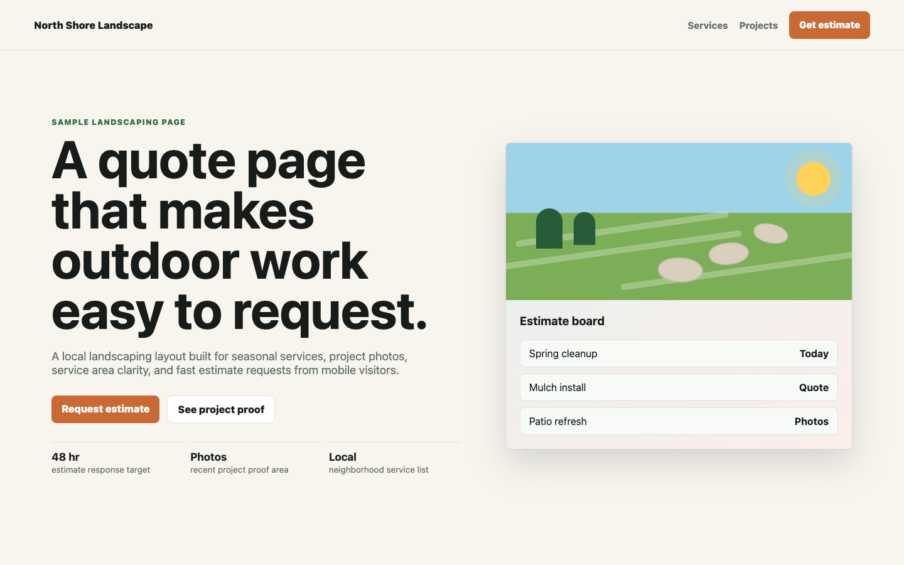
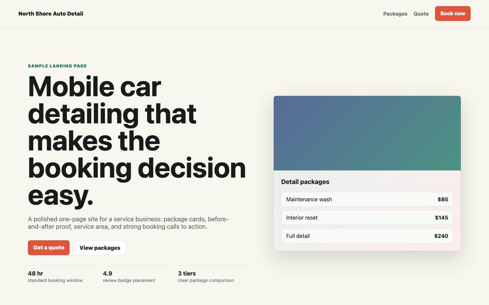
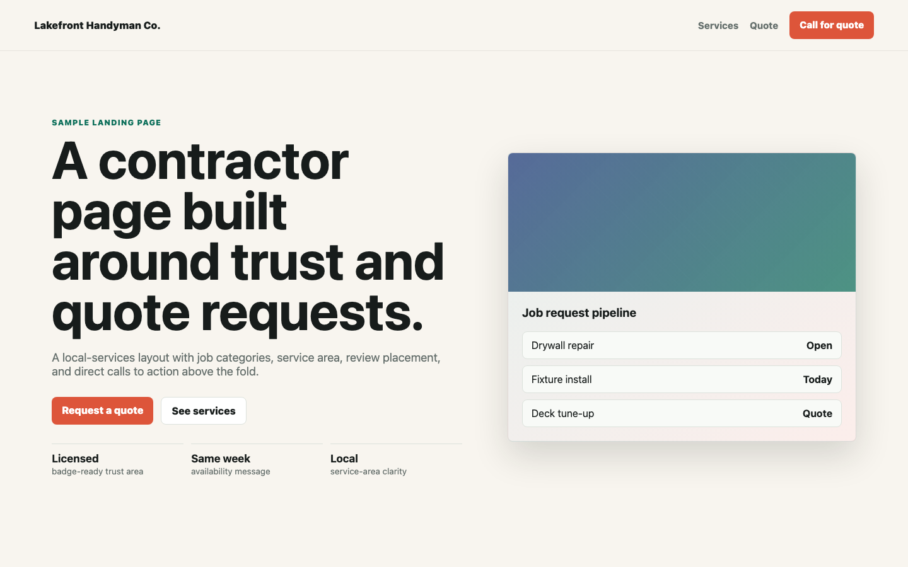
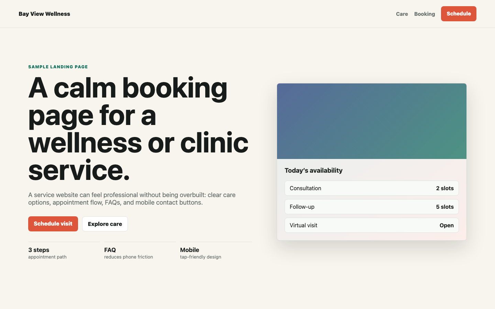

Website repair pass
$150Fix broken layout, missing links, bad mobile spacing, slow images, weak calls to action, and basic SEO issues on an existing site.
See repair scopeMilwaukee websites and practical software
I build clean landing pages, repair broken sites, automate repetitive admin work, and ship small tools that make a business look sharper online.
Simple offers
Fix broken layout, missing links, bad mobile spacing, slow images, weak calls to action, and basic SEO issues on an existing site.
See repair scopeA polished landing page with service sections, contact buttons, testimonials or proof, mobile layout, and launch-ready files.
Request siteCSV cleanup, lead trackers, reporting dashboards, internal calculators, or small scripts that remove repetitive manual work.
Request automationLead magnet
Mobile clarity, contact path, trust signals, loading friction, and whether the page gives visitors a reason to act.
The audit returns a short prioritized list that works as either a self-check or a paid repair-pass brief.
Business owners can email the score and get a fixed-scope quote without a long call.
Samples and real work

A local-services page for project photos, seasonal offers, service areas, and fast quote requests.

A service page with price tiers, proof, booking buttons, and mobile-first layout.

A practical local-services page built around calls, quote requests, and trust signals.

A calm service page with clear appointment flow, service cards, and FAQ structure.
Release-readiness scanner for JavaScript and TypeScript repositories.
View repoCollection of browser-based developer utilities for JSON, hashes, regex, and more.
View repoBrowser app for pitch detection, vocal analysis, and interactive training exercises.
View repoMarket scanner with multiple detection algorithms and zero external dependencies.
View repoHow a small project works
Share the site, task, or workflow that is wasting time or losing customers.
I reply with a short plan, price, deliverables, and timeline before any work starts.
You get a live preview or files, then one focused revision pass to tighten it up.
Ready to make something useful?